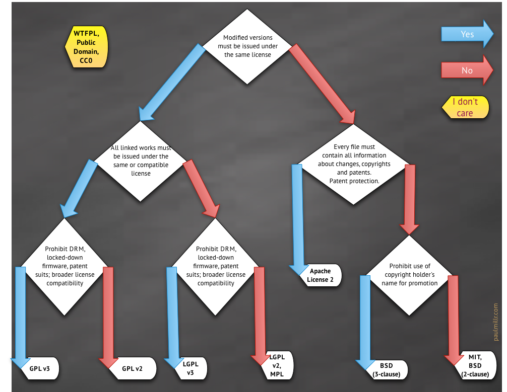

1.
README
杂烩
2.
批量下载语雀知识库文档
3.
Ag快速搜索代替grep
4.
markdown自定义样式
5.
MobaXterm
6.
Putty的ColorTheme分享
7.
Vim折叠方式和卡顿
8.
vim作为IDE的基本配置
9.
如何更新fork的repo
10.
一次难忘的宏定义debug
11.
一张图弄明白开源协议
12.
自定义的xshellTheme
闲书笔记
13.
网络文摘
14.
低水平勤奋陷阱
15.
疲惫生活中的英雄梦想
16.
阿里工程师的自我修养
17.
程序员的职业素养
18.
对自己狠一点
19.
高效能人士的七个习惯
Light (default)
Rust
Coal
Navy
Ayu
Barret's Reading Notes
